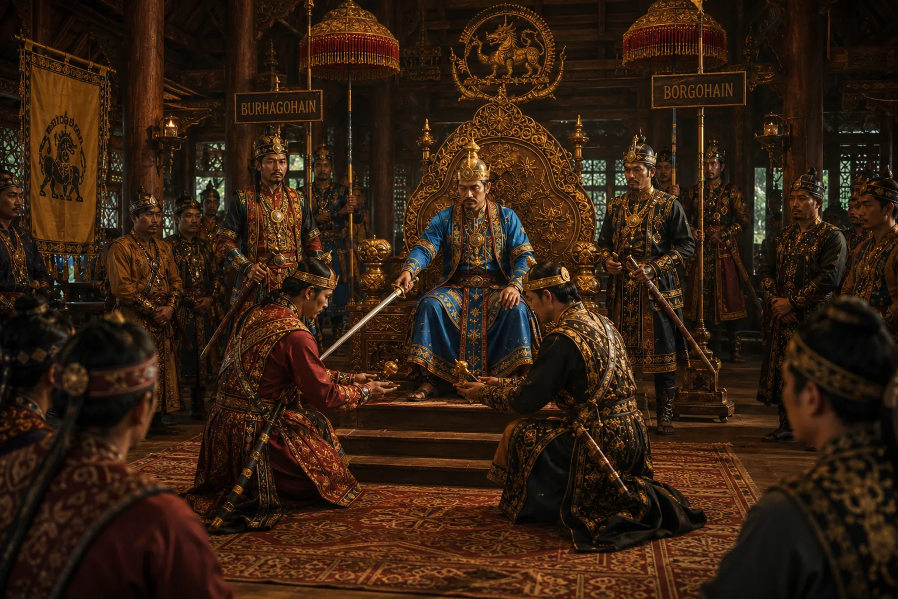

Institution of the Supreme Offices of Burhagohain and Borgohain
c. 1230–1253 · The coming of Sukaphaa

Sukaphaa institutes the Great Council of Nobles: Thaomung Klinglunmang (Burhagohain) and Thaomung Kangngan (Borgohain), forming a hereditary prime-ministerial council.
Sources have not yet been catalogued for this record.
People: Chaolung Sukaphaa
Open this scene in the interactive archive · Follow this event on MAP